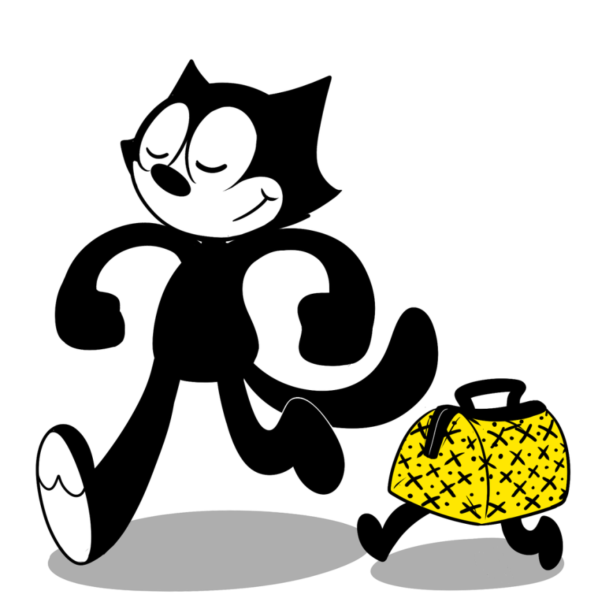

 Hola
El gato Félix, también conocido como Félix el gato, es un personaje animado de la era del cine mudo.
Su pelaje negro, ojos blancos, y amplia sonrisa, junto a las situaciones surrealistas en las que sus historias se presentaban, contribuyeron a hacer de Félix uno de los personajes animados más reconocibles del mundo
Los orígenes de Félix continúan cuestionados. Pat Sullivan, caricaturista y empresario de cine de origen australiano y el animador estadounidense Otto Messmer han afirmado ser los creadores, y la evidencia parece sostener ambas demandas. Muchos historiadores, incluyendo John Canemaker, afirman que fue Sullivan quien plagió a Messmer. Lo que es seguro es que el gato salió del estudio de Sullivan, y los dibujos animados que incluían al personaje disfrutaron de un enorme éxito en los años 1920